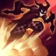
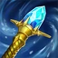

About Shaco
Shaco is a cunning and chaotic trickster who thrives on the thrill of deception and the art of mischief. Known as the Demon Jester, he uses his deceptive abilities to outsmart and outplay his enemies.
Shaco is a cunning and chaotic trickster who thrives on the thrill of deception and the art of mischief. Known as the Demon Jester, he uses his deceptive abilities to outsmart and outplay his enemies.
| Icon | Ability | Description |
|---|---|---|
| Backstab (Passive) |
Shaco's basic attacks and abilities deal bonus damage when attacking from behind. | |
|  | Deceive | Shaco blinks to a target location and becomes invisible for a short duration, enhancing his next attack to deal bonus physical damage. This damage can critically strike. |
| Jack in the Box | Shaco places a box that goes invisible for a long period of time and fears and damages enemies when enemies get too close. | |
| Two-Shiv Poison | Shaco throws a dagger that poisons the target and slows them down. | |
| Hallucinate | Shaco creates a clone that can be manually controlled, which can cause confusion in enemies and discourage them from fighting you. When the clone dies, it explodes, dealing a large amount of damage and creating three small box traps that attack enemies for a few seconds. |
This strategy focuses on using Shaco's abilities to deal significant damage over time, utilizing items that apply burn effects like Liandry's Torment, Blackfire Torch, and Malignance to enhance Shaco's damage. The idea is to maintain control over jungle paths with wards and boxes, instilling a psychological fear in your opponents, preventing them from stepping into jungle paths without an Oracle Lens. While Oracle Lens does counter your box traps and wards, it also ensure that the enemy is forced to purchase more wards rather than rely on their trinkets. At the end of the day, the enemy has to either prioritizing removing your traps or maintaining vision of the map.
What makes this build so threatening is that through the stacking of damage over time effects from items, you reapply the burn every single time your trap hits a target. This can stack up very quickly and produce a high amount of damage, even against tankier enemies. Furthermore, the focus on hit and run tactics and deceptive play style makes AP Shaco a nightmare to get close to when playing a champion with low durability.
To truly take advantage of AP Shaco, you need to be really analytical and understand how your opponent is going to behave or react before they do. If you can play the game of prediction to a greater extent, you can cut off enemies with boxes, confuse enemies by juking them through bushes and over walls, and you can take full advantage of your ability to summon a clone to trick enemies into attacking the wrong Shaco. Countless times I've convinced an enemy to attack a clone while I'm hiding in a bush only to watch them kill it and for the clone to explode and deal half their health in damage without me even leaving the bush.
| Image | Item Name | Reason for Buying |
|---|---|---|
| Blackfire Torch | Blackfire Torch is a solid first purchase into AP Shaco, because it gives us flat bonus magic damage on abilities, which is constantly reapplied by our boxes, as well as a good amount of AP, cooldown reduction, and mana. Considering we want to be using a lot of abilities and placing a lot of boxes, the mana is one of the key reasons for buying this early. | |
| Liandry's Torment | Liandry's Torment adds another damage over time source to our abilities, making our boxes drain health from enemies at an alarming rate, especially if they accidentally walk into multiple boxes back-to-back. It also gives us a percent increase to all damage we deal just for staying in combat, which can also be refreshed by our boxes. It provides us good ability power with some bonus health to aid in survivability. Taking it as a second item, or even a first item if you're facing a very tanky team is a good plan. | |
| Malignance | Malignance is another great damage over time item that empowers our ultimate ability. It provides the same great stats as Blackfire Torch: ability power, mana, and cooldown reduction. But the unique aspect of this item is its bonus cooldown reduction on your ultimate. Shaco already has a pretty low cooldown on his ultimate, but being able to send in clones more often is never a bad idea. | |
| Rabadon's Deathcap | Rabadon's Deathcap is generally taken as the 4th or 5th item in your build, simply for the sole purpose of boosting your ability power by a large amount, increasing your damage across the board. | |
|  | Rylai's Crystal Scepter | Rylai's Crystal Scepter is another great survivability item, boasting high amounts of health and ability power. But what really makes this item shine is how it applies a slowing effect on all ability damage dealt. This can be incredibly frustrating to play against when you keep walking into boxes that fear and slow you, ultimately increasing your crowd control and damage at the same time. |
| Sorcerer's Shoes | Sorcerer's Shoes is the standard magic damage boots option, giving us our movement speed and some magic penetration as a bonus. |
This strategy leverages Shaco's Q ability, Deceive, combined with the AD support item Bloodsong and Voltaic Cyclosword for massive damage potential in a single hit. The goal is to surprise enemies with high burst damage while providing utility to the team. This approach capitalizes on Shaco's ability to engage and disengage effectively, making him a versatile support option that can deal massive damage to key targets.
This strategy relies on your ADC being self-reliant enough to dodge and avoid crowd control attempts, as your disengage tools are limited to a time-delayed box trap that can be destroyed and a short-duration slowing effect. You should not allow yourself or your partner to get engaged upon, but rather be the one who decides when it's time to engage by using your ability to jump over walls while stealthed to your advantage.
Choose Deceive as your starting ability. You're going to use this to scout for enemies sitting in bushes during invade attempts and to surprise your opposing ADC if they end up too far away from their support. Always aim to hit your opponents back for bonus damage. At level 2, pick Jack in the Box and if there is an opportunity to engage, drop a box in the direction the enemy is going to run once you appear from stealth before hitting them in the back. This may end up with your opponent getting feared by the box and taking a large amount of damage from both you and your ADC. You should prioritize leveling up Deceive, followed by Two-Shiv Poison.
Outside of combat, try to stay in range of minions to make sure you get experience. It's very easy to fall behind in experience. If the opponents are playing incredibly safe, you can look to roam to other lanes or the jungle and set up wards. If you find the jungler and you're feeling confident, you can attempt to interrupt them with a skirmish. Often, I find myself locating junglers with half health, which makes fighting them fairly easy with Deceive.
In the mid to late game, your priority should be focused on isolating and assassinating high priority targets. Make sure you keep wards and boxes up around you at all times, to help both your team and yourself locate stranded enemies and to engage fights on enemies feared by your boxes.
| Image | Item Name | Reason for Buying |
|---|---|---|
| Bloodsong | As an assassin support, your go-to support item is Bloodsong. This synergizes extremely well with your Q, allowing you to hit very hard as soon as you unlock it. The 10% extra damage scales on all other sources of damage, including your Q damage, your Voltaic Cyclosword damage, and you backstab damage. Even your allies benefit from the increased damage! | |
| Voltaic Cyclosword | Voltaic Cyclosword is your rush item, and should be the very first item you build to completion. The bonus attack damage, lethality and on-hit effect synergize greatly with Shaco's abilities. Unless you're dominating lane, you'll likely purchase this item around the same time that your Bloodsong gets unlocked. At this point, between your Q, Bloodsong, and this item, you should be able to obliterate health bars pretty early in the game. | |
| Yun-Tai Wildarrows | Yun-Tai Wildarrows is a good third or fourth item to get, especially if you find yourself facing tankier opponents. The attack damage and crit benefit your overall abilities, but what really sets this item apart is that even without high amounts of crit chance, you can still trigger the damage over time effect if you land a hit with your Q or backstab passive. | |
| Infinity Edge | Infinity Edge is a solid third or fourth item to get, especially if you find yourself facing squishier opponents. The attack damage and crit benefit your overall abilities, but what really sets this item apart is that evne without high amounts of crit chance, the passive effect that increases critical damage applies on your Q's and backstab damage. | |
| Collector | The Collector is mainly chosen as the final core item in the build due to the stats it provides: attack damage, crit chance, and lethality. However, being able to execute enemies below 5% health also lends a lot of credence to your ability to assasinate targets with high amounts of burst damage. This effectively reduces the amount of damage you need to do to an enemy by 5%. | |
| Synchronized Souls | We go with the Synchronized Souls for boots because it gives us the most speed out of combat which helps with engaging from long distances, scouting, or rotating between lanes and objectives. It also has an additional effect of allowing us to recall faster than other people, which we can use to our advantage if we're caught in a bad position. Simply use your Q to get over a wall and immediately recall. |